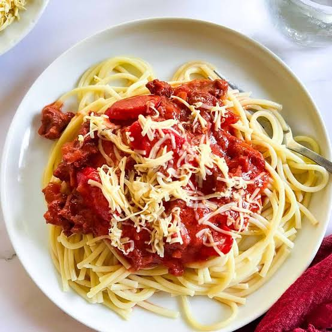

Spaghetti

Description of picture includes : Deliciousness in a plate sized bowl?
Ingredients
- 1 lb spaghetti noodles(cooked tender, past el dente)
- 1 lb ground beef (or a mix of ground beef and ground pork)
- 4-6 Filipino-style hot dogs, sliced diagonally on the bias
- 1 cup banana ketchup
- 1 can(15oz) tomato sauce
- 2-4 tbsp tomato paste
- 1/2 cup beef broth (or reserved starchy pasta water)
- 1 small yellow onion, finely diced
- 3-4 cloves garlic, minced
- 2-3 tbsp condensed milk (or 1/4 cup brown/granulated sugar) for that signature sweetness
- 2 tbsp cooking oil
- Salt and black pepper to taste
- Shredded cheddar or quick-melt cheese (for generous topping)
Steps to follow to make this fucking deliciousness
- Cook the Pasta: Boil the spaghetti noodles in salted water until they are tender (traditionally softer than al dente for Jollibee style). Drain and set aside, saving about 1 cup of pasta water.
- Brown the Hot Dogs: Heat a tablespoon of cooking oil in a large pan over medium-high heat. Fry the sliced red hot dogs for 2-3 minutes until lightly browned, then removed them and set aside.
- Saute Aromatics & Meat: In the same pan, add the remaining oil, Saute the minced garlic and diced onions until soft and fragrant. Add the ground beef (and porf, if using) and cook until browned, breaking it up into small pieces with a spatula.
- Simmer the sauce: Stir in the tomato sauce, banana ketchup, tomato paste, and beef broth. Mix in the condensed milk (or sugar) and season with salt and pepper. Reduce the heat to low, cover, and let it simmer for 20 to 30 minutres so the flavors blend.
- Combine: Toss the fried hot dog slices back into the sauce. You can either mix the cooked spaghetti directly into the sauce or plate the noodles first and ladle the heavy meat sauce right on top.
- Top and Serve: Cover generously with shredded cheddar or quick-melt cheese while the pasta is still hot.
Back to Main